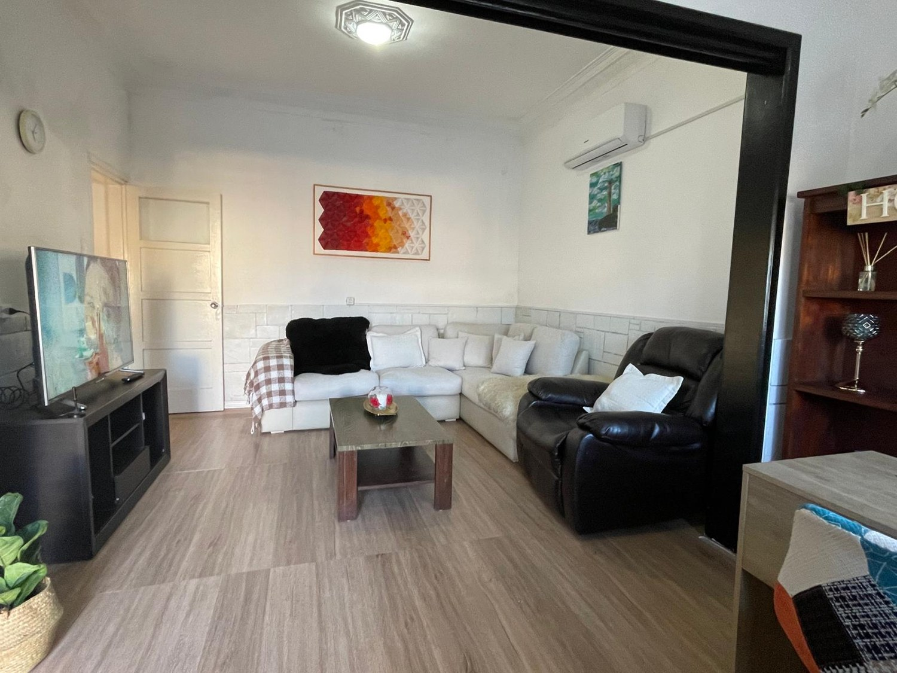

Atención personalizada
Apoyo en las actividades cotidianas y seguimiento de las necesidades de cada persona.
 Brisas de MalvínRESIDENCIAL PARA PERSONAS MAYORES
Brisas de MalvínRESIDENCIAL PARA PERSONAS MAYORESUN HOGAR EN EL CORAZÓN DE MALVÍN
Un lugar donde cada historia importa. Cuidamos a las personas mayores con respeto, cercanía y el cariño de sentirse en casa.

UN RECORRIDO POR NUESTRO HOGAR
Conocé Brisas de Malvín desde adentro.
Sabemos que elegir un residencial es una decisión importante. Queremos que puedas acercarte, conocer nuestros espacios y conversar sobre los cuidados que tu familia necesita.
Recorré nuestra galería ↗LAS PUERTAS ABIERTAS, LOS VÍNCULOS CERCA
Las visitas son libres. Podés venir a compartir tiempo con tu ser querido, conversar y seguir construyendo momentos juntos. Porque los afectos también son parte del cuidado.
CERCA, EN CADA ETAPA
Apoyo en las actividades cotidianas y seguimiento de las necesidades de cada persona.
Tiempo para compartir, conversar y seguir construyendo momentos juntos.
Actividades, alimentación y movimiento adaptados a nuestros residentes.
ESTAMOS PARA ESCUCHARTE
Conversemos sobre lo que tu familia necesita.
Coordiná una visita ↗Hipólito Yrigoyen 1719
Malvín, Montevideo